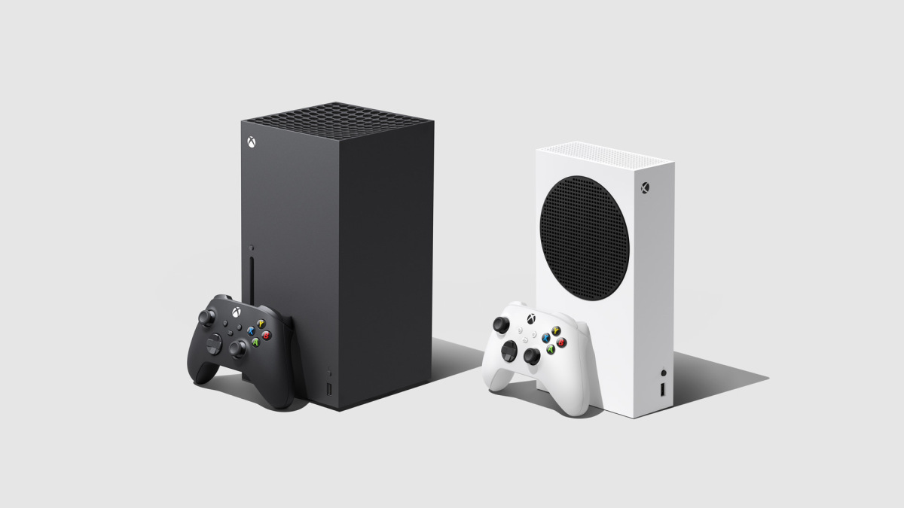

23.10.2020
На улице почитателей консолей Microsoft праздник – приставки нового поколения Xbox Series X и Series S уже вот-вот поступят в продажу! Осталось только дождаться ноября…
Однако для некоторых игроков торжество омрачено неполным пониманием, в чем собственно, заключаются отличия Xbox Series X от Series S. Действительно, названия не самые говорящие.
Но не спешите отчаиваться! Для прояснения ситуации интернет-магазин ИгроРай и подготовил этот материал. В нем мы проведем подробное сравнение Xbox Series X и S, и поможем Вам в выборе консоли, подходящей именно Вам.
Новый Xbox Series X– это тот самый «черный монолит», знакомый всем, кто давно следит за новостями о консолях. Приставка заявлена Microsoft как основная модель девятого поколения.
Собственно, одно из отличий Xbox Series X при сравнении с Series S– габариты: 301 х 151 х 151 мм, и вес около 4, 5 кг. Приставка может быть установлена как вертикально, так и горизонтально (корпус оборудован встроенным ножками). Впрочем, инженеры Microsoft рекомендуют осторожно использовать консоль в «лежачем положении». Дело в том, что охлаждение Series X обеспечивается уникальной архитектурой Xbox Velocity, вбирающей холодный воздух в нижней части корпуса, пропускающей его через консоль и выбрасывающей горячий воздух через верхнюю решетку. Если уместить приставку на маленькой полочке, то системе циркуляции воздуха может просто не хватить пространства для эффективной работы.
Еще одна причина купить Microsoft Xbox Series X– мощное «железо», являющееся залогом высочайшей производительности. Восьмиядерный процессор AMD с тактовой частотой 3,8 ГГц, видеочип AMD RDNA2 с производительностью 12,5 терафлопс и 16 Гб оперативной памяти обеспечивают комфортный гейминг нового поколения в разрешении 4К и с плавной частотой кадров 60 fps. А твердотельное внутренне хранилище объемом 1 Тб позволит хранить в памяти консоли сразу несколько больших игр.
Наконец, Xbox Series Xотличается наличием высокоскоростного дисковода Blu-ray, что станет хорошей новостью для всех, кто предпочитает надежность физических носителей. Благодаря дискам внезапное отключение Интернета не отнимет у Вас любимые игры; Вы сможете собрать собственную коллекцию Blu-ray, экспонатами которой можно обмениваться с друзьями; в отличие от цифровых версий, не понравившуюся игру на диске можно легко перепродать.
Итак, Xbox Series X– самая мощная консоль Microsoft с наибольшим функционалом и универсальным Blu-ray дисководом.
Чем же отличается новый XboxSeries S? Во-первых, компактными габаритами: 275 x150 x65 мм при весе в 2 кг. Охлаждение этой модели устроено не так, как у Series X: оно производится через воздухозаборники с левой и правой сторон консоли, так что наилучшее положение для ее работы – горизонтальное. В любом случае, много места приставка не займет.
Сравнение Xbox Series S со «старшей» версией невозможно без сопоставления мощностей комплектующих. На борту Series S- Восьмиядерный AMD CustomZen2с частотой 3,6 ГГц, видеокарта AMD RDNA2 с 4 TFLOPS вычислительной мощности, а также 10 Гб ОЗУ. По расчетам инженеров Microsoft, приставка обеспечит разрешение 1440pи частоту кадров 60 в секунду в играх девятого поколения.
Наконец, купить именно Xbox Series S стоит тем, кто предпочитает цифровые носители. У Series S нет дисковода, что положительно сказывается на габаритах, весе и стоимости консоли. Игры предстоит скачивать непосредственно на твердотельный высокоскоростной накопитель объемом 512 Гб.
Если Вы не гонитесь за максимальным качеством картинки, не собираете диски Blu-rayи не хотите тратить большие деньги на гейминг, то демократичная Xbox Series S– Ваш выбор.
Итак, мы провели небольшое сопоставление Xbox Series X vs S. Теперь тезисно пройдемся по сходствам приставок Microsoft:
- Схожие комплектующие. Несмотря на разницу в мощности, Series X и Series S используют одни и те же передовые технологические решения;
- Трехмерный звук. Для его создания обе консоли применяют один и тот же выделенный аудиочип;
- Одинаковые возможности подключения. За вычетом дисковода Xbox Series X|S оснащены одинаковыми слотами для подключения аксессуаров и поддерживают одни и те же протоколы беспроводной связи;
- Общие аксессуары. Обе приставки работают с новым беспроводным геймпадом Xbox и прочими аксессуарами Microsoft;
- Единая библиотека Xbox. Тысячи игр четырех поколений, доступные на Xbox Series X, доступны на Xbox Series S, и наоборот. Разница только в разрешении изображения;
- Игровое пространство Microsoft. Владельцы Xbox Series S могут свободно играть в кооперативные и сетевые игры с обладателями Series X. Сервисы, такие как Xbox Game Pass, доступны игрокам на обеих версиях консоли;